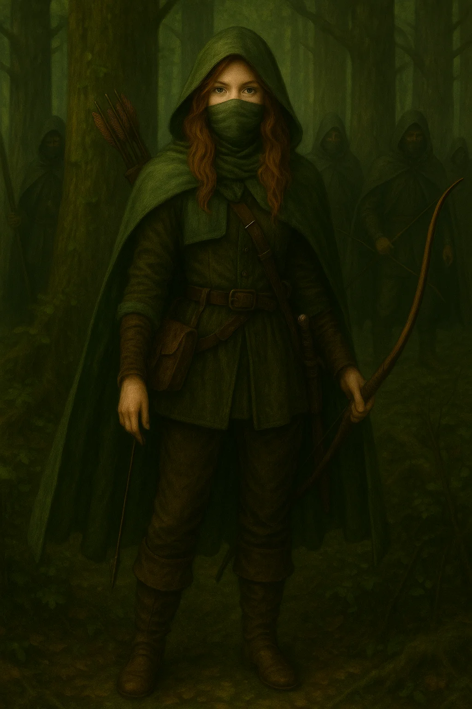
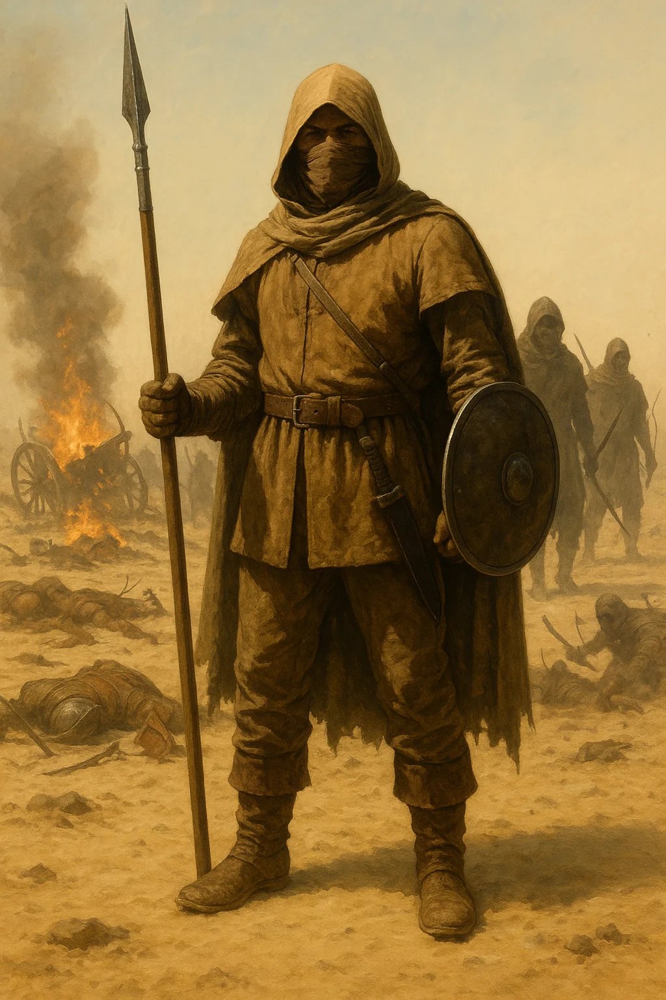
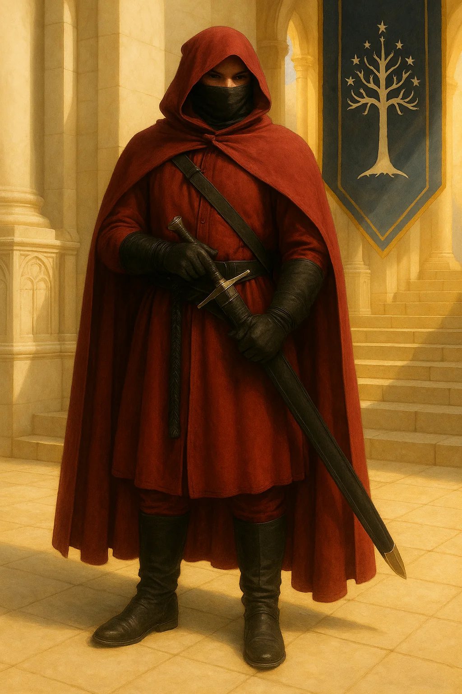

“Archives lie by omission; legends, by necessity.”
Unofficial chronicles of the Red War — 9th Company.
This page gives the hierarchy and three outfits in English. The Royal Edict, War of the Ring chronicles, testimonies, and Pelennor archives are kept in French on Histoire & légendes (same images and structure).

1. Novice
Full title: Novice of Ithilien
Role: Aspiring Ranger in training. Receives basic instruction on plants, terrain, combat, survival, and tactical principles of Ranger units.
2. Ranger
Full title: Ranger of the 9th Company
Role: Active, autonomous, and discreet member. Skilled in recognizing edible and dangerous plants, and wielding the bow, spear, and sword. Operates in pairs or small groups.
3. Watcher
Full title: Watcher of the Shadows
Role: Responsible for a small group of Rangers (2 to 5 members). Coordinates ambushes, reconnaissance, and collective survival.
4. Master Ranger
Full title: Master Ranger of Ithilien
Role: Leader of an operational detachment, expert in combat and survival. Trainer, keeper of oral traditions and ancient codes.
5. First Master of the 9th Company
Full title: First Master of the 9th Ranger Company of Gondor Galadhrim Dagnir
Role: Commander of the Company. Tactician, responsible for engagement decisions, training of Master Rangers, and preservation of traditions.

“We are the leaves in the wind, the walking trees, the Silent Guardians of the lands of Gondor.”
Description: Tunic and trousers in shades of moss green, earth brown, and leaf gray, designed to blend into Ithilien’s forests, undergrowth, and ancient ruins.
Equipment: Longbow of ash or yew, back quiver, short dagger, and one-handed sword. Large cloak, hood, and reinforced boots for long marches.
Usage: Patrol, ambush, site protection, reconnaissance.
Philosophy: Balance between Man and Nature, constant vigilance, and loyalty to Gondor.

“We are the Fear that prowls before dawn. We are the Shadow of terror in the night.”
Description: Sand, ocher, or light brown tunic, light and wide, designed for the desert and rocky regions of Southern Gondor.
Equipment: Water gourds, short blades and spears, short double-curved bow.
Usage: Infiltration, sabotage, preemptive strikes.
Philosophy: Lightness, efficiency, discretion. Predators of the desert.

“We have shed blood for the Peace and Glory of Gondor. The King himself has seen us.”
Description: Wine-red cape, matching tunic and trousers. Black boots and gloves, black mask.
Equipment: Large ceremonial sword. Black belt, baldric, and braided cord.
Usage: Representation, ceremonies, official missions of Gondor.
Symbolism: Loyalty, mourning, eternal oath.